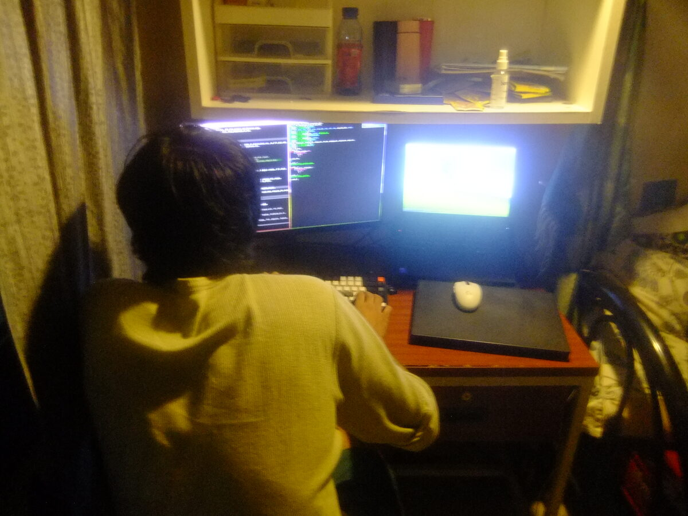

lot0x2c
lot0x2c
i am a guy interested in open source, philosophy, unix, and systems. currently learning graph theory, real analysis, machine learning, and lockpicking. currently reading new directions in cryptography by whitfield diffie and martin hellman.
i use nixos, emacs, and sway (with swaybar).
desk

- thinkpad e14, running nixos
- thinkpad t480, running openbsd
- keychron k2
- lg 7800x
the e14 runs nixos with emacs and sway (with swaybar). the whole system is one config, so it's written down and can be rebuilt from scratch. the t480 runs openbsd with cwm and xterm and not much else, set up the bare minimum way.
projects
candyflip, a pink and teal theme for emacs
oeel, a file tree in emacs that you edit like text
blog
- random vs secure2026-11-23
- regex2026-11-23
- why nixos2026-11-23
- bare minimum to get openbsd running2026-11-22